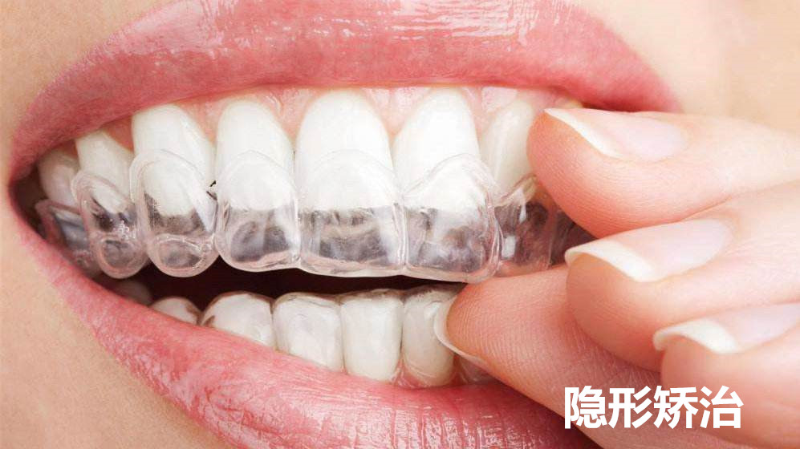

持续疼痛 / 冷热敏感
细菌侵蚀到牙本质深层，冷热酸甜刺激引发疼痛，是最常见的牙疼原因。早期可能只有冷热敏感。
早期可补牙修复蛀牙未及时治疗，细菌感染牙髓（牙神经），引起剧烈疼痛，尤其是夜间疼痛加剧。
需根管治疗牙髓炎继续发展，炎症扩散到牙根尖周围组织，牙齿浮起感、咬合时疼痛明显。
需根管治疗严重的牙周炎导致牙周袋内细菌感染化脓，牙龈红肿、胀痛，可能伴有发热。
需牙周治疗智齿萌出不全，牙冠周围牙龈瓣发炎，张口受限、吞咽疼痛。常见于18-30岁人群。
需拔除智齿牙齿表面出现细微裂纹，咬合时疼痛明显，多见于咀嚼硬物后，裂纹可延伸至牙根。
需全冠修复
28岁女性，右下后牙自发性疼痛，经根管治疗+冠修复后疼痛消失

45岁男性，重度牙周炎合并牙周脓肿，经系统治疗后症状完全缓解
牙齿黑点 / 食物嵌塞 / 冷热敏感
致龋菌分解食物中的糖分产生酸性物质，持续侵蚀牙釉质，使矿物质流失形成蛀洞。
所有蛀牙的根源牙釉质表面出现白垩色或褐色斑点，没有明显疼痛。此时补牙最简单。
可一次补好蛀牙发展到牙本质层，对冷热甜酸产生敏感刺激。此时仍可保留牙神经。
需去腐充填蛀洞接近或已穿透牙髓腔，引发牙髓炎，出现自发痛、夜间痛。需根管治疗。
需根管治疗

32岁男性，右下后牙大面积龋坏，经瓷嵌体修复后颜色形态与天然牙一致
25岁女性，多颗牙齿邻面浅龋，美学树脂充填色泽自然逼真
牙齿缺失 / 邻牙倾斜 / 咀嚼困难
蛀牙发展到无法保留的程度，是导致缺牙最常见的原因。牙体组织大部分丧失，无法通过补牙修复。
需拔除后修复严重的牙周炎导致牙槽骨吸收、牙齿松动脱落。是成年人缺牙的主要原因之一。
需牙周+种植因意外撞击、摔倒等导致牙齿完全脱位或折断无法保留。需立即就医处理。
需紧急处理先天性的牙胚缺失，最常见于第三磨牙（智齿）和侧切牙。需根据情况修复。
需修复治疗

35岁男性，右下第一磨牙严重龋坏无法保留，单颗种植修复后咀嚼功能接近天然牙
60岁女性，下颌多颗牙缺失多年，种植体支持的固定桥修复后重获咀嚼功能
牙齿不齐 / 地包天 / 牙缝过大
牙弓长度不足以容纳所有牙齿，导致牙齿排列不齐、重叠。不易清洁，易患龋齿和牙周炎。
最常见错𬌗畸形下牙咬在上牙外面，影响面部美观（月亮脸），还可能影响咀嚼功能和颞下颌关节健康。
建议早期矫治上前牙过度前突，下前牙位置靠后。容易造成外伤性折断，影响唇部闭合和面部美观。
需正畸治疗牙齿之间有过大的间隙，影响美观且容易嵌塞食物。可能因牙齿过小或先天性缺牙引起。
可矫正或修复咬合时前牙不能接触，形成梭形缝隙。影响发音和切割功能，常伴有吐舌习惯。
需正畸+肌功能训练牙齿未能正常萌出，埋伏在颌骨内，常见于尖牙和智齿，可能压迫邻牙牙根。
需外科+正畸联合

22岁女性，牙列拥挤影响美观，历时18个月矫正后牙齿排列整齐
26岁男性，前牙轻度拥挤，隐形矫正12周即见显著改善